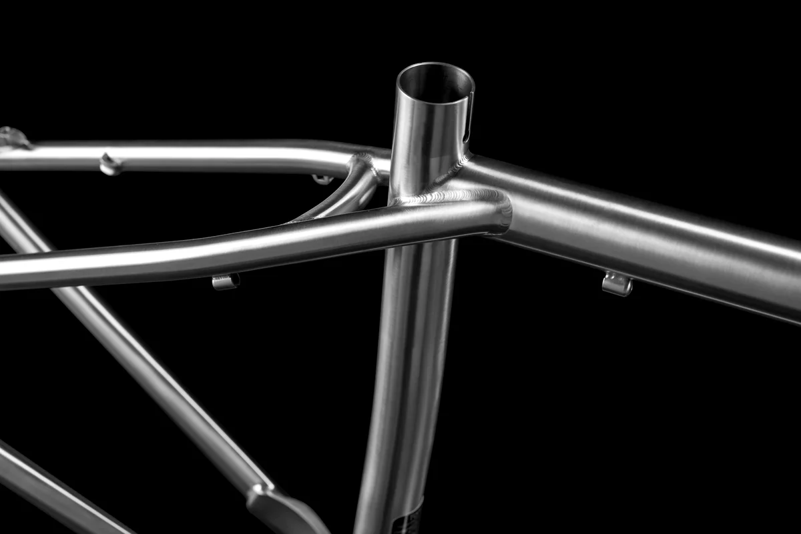
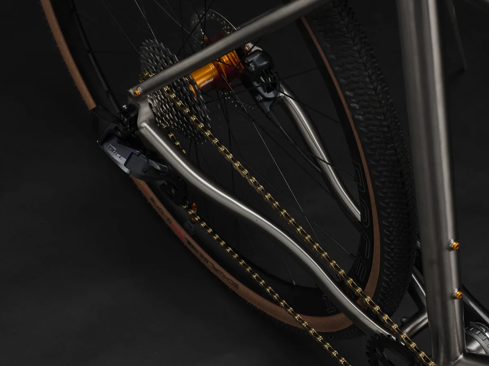
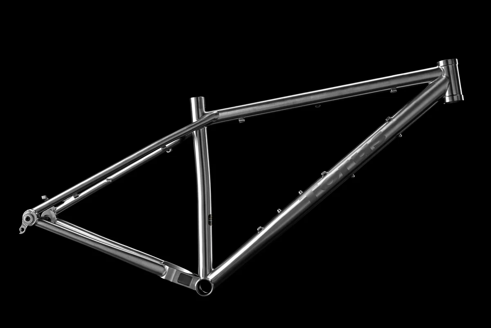

When it comes to cycling, the choice of frame material plays a critical role in performance, durability, and ride quality. While carbon fibre, steel and aluminium are popular frame materials, titanium stands out as the ultimate choice for many cyclists seeking a balance of aesthetics, ride quality, performance and reliability.
Our titanium frames are designed in the UK and are handcrafted from aerospace grade tubing, with a high-level of craftsmanship. The visually striking brushed-metal finish provides a timeless aesthetic that will not age or be tarnished during use.
Titanium is praised for its unique ride quality, which results from its ability to absorb vibrations and offer a smooth, comfortable ride, without sacrificing performance. Titanium is a metallic material with an ideal balance of strength and weight. Due to its strength, titanium frames can be manufactured from thin-walled tubing, which provides a degree of flexibility. This natural compliance allows titanium frames to absorb road buzz and trail chatter. At the same time, titanium is lightweight and maintains excellent power transfer, making it a top choice for riders seeking both comfort and performance.
Once you invest in a titanium frame, maintenance is minimal. Titanium is strong and does not corrode, so you won’t need to worry about paint chips, rust, or frame fatigue over time. This makes it an excellent option for riders who frequently ride in wet or humid environments, ensuring that the frame remains as strong and visually appealing as the day it was built. Titanium frames offer peace of mind and long-term reliability.
While other frame materials have their advantages in specific riding scenarios, titanium offers the perfect combination of ride quality, performance, reliability and aesthetic appeal. For those discerning riders looking for a lifelong riding companion, titanium is the material of choice.